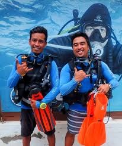

Open water scuba diving is an exciting step for new divers, but it also brings new challenges. Many students feel nervous about deeper water, changing conditions, and using skills outside a pool. Proper preparation is important for safety, confidence, and smooth skill transfer.
Scuba diving trainers prepare students through a structured learning process. Skills are first taught in confined water, where control and comfort are built. Trainers then gradually introduce real open water conditions, such as depth, currents, and visibility changes. This step-by-step approach helps students understand what to expect and apply their training calmly and safely in real dive environments.
The move from pool training to open water is the most important stage for new divers. In a pool, conditions are controlled and predictable. Open water introduces real environmental factors that test both skills and awareness. This transition is where students learn how to apply what they practiced in a real setting.
Open water environments differ in many ways. Depth changes can affect buoyancy and air use. Visibility may vary due to weather, water movement, or location. Currents can change direction and strength, requiring better control and positioning. Marine life interaction also becomes part of the experience and must be managed calmly and respectfully.
Mental readiness is just as important as physical skills. Trainers focus on building confidence, stress control, and situational awareness so students can think clearly and respond safely in real diving conditions.
Before entering open water, trainers focus on building a strong and reliable foundation. This stage ensures students feel comfortable with their gear and basic skills before facing real conditions. Confidence starts with familiarity and repetition.
Students first learn the purpose and function of each piece of dive equipment. Trainers explain how the gear works and why correct setup matters for safety. Proper assembly and pre-dive safety checks are practiced step by step. These steps are repeated often to build muscle memory, so students can prepare their equipment calmly and correctly without rushing.
Confined water sessions focus on essential skills. Students practice mask clearing and regulator recovery until the movements feel natural. Buoyancy control fundamentals are introduced early to help maintain balance and control underwater. Trainers also emphasize controlled breathing techniques, which support air efficiency, calmness, and overall dive stability.
Safety awareness is a core part of scuba training. Trainers help students learn how to stay alert and aware underwater. This includes monitoring depth, air supply, surroundings, and their buddy at all times. Good awareness reduces stress and prevents small issues from becoming serious problems.
Beginner divers face common risks such as poor buoyancy, separation from a buddy, or panic when something feels unfamiliar. Trainers address these risks early through clear instruction and repetition.
Students are taught strict buddy system discipline so no one dives alone. Emergency ascent concepts are explained and practiced in a controlled way to build understanding without fear. Hand signals and underwater communication are introduced early to ensure clear interaction below the surface.
Trainers place strong emphasis on prevention rather than reaction. By recognizing potential issues early and responding calmly, students learn to dive safely, confidently, and responsibly in open water environments.
Mental preparation is just as important as physical skills in scuba diving. Many students feel anxious before their first open water dive. Trainers address this early to help students stay calm and focused.
Trainers set realistic expectations about what students will experience, including changes in depth, visibility, and water movement. Clear dive briefings explain the plan step by step, so nothing feels unexpected. Visualization techniques are often used, where students mentally rehearse skills and dive flow before entering the water.
Students are encouraged to make calm decisions underwater rather than rushing or panicking. Trainers also build trust by staying close, offering reassurance, and maintaining clear communication. When students feel supported and understood, confidence increases, and the transition into open water becomes smoother and safer.
Skills are introduced gradually during the first open water dives to avoid overload. New divers need time to adjust to depth, movement, and surroundings while staying relaxed. Trainers focus on one step at a time so students can apply skills with control and confidence.
Previously learned techniques from confined water are reinforced in real conditions. Mask skills, buoyancy control, and breathing are practiced again, but now with natural variables like depth and visibility. Controlled depth increases are used to help students adapt slowly and safely.
After each dive, trainers provide clear and simple feedback. What went well is highlighted first, followed by small corrections. This approach builds confidence without pressure. It also allows steady improvement from dive to dive.
This is where a Scuba Diving Instructor observes, adjusts, and reinforces skills during early open water experiences, ensuring learning remains safe, supportive, and effective.
Open water training includes learning how to dive responsibly. Trainers teach students to respect marine life and avoid touching reefs or animals. Proper finning techniques are practiced to prevent stirring up sand or damaging coral. Neutral buoyancy is emphasized as an environmental skill, not just a control skill, because it helps divers stay off the reef and maintain good positioning.
These habits are reinforced during every open water dive. By learning responsible behavior early, students develop awareness that stays with them long after training. Open water instruction shapes how divers interact with the underwater world throughout their diving life.
Trainers evaluate readiness based on performance, not speed. Progress is measured by how comfortably and safely a student dives, not how fast skills are completed.
Instructors look at comfort level in the water, calm problem-solving ability, and overall situational awareness. Students must show control, awareness of their buddy, and the ability to respond without panic. Not all students progress at the same pace, and trainers adjust guidance to support safe and confident independent diving.
Proper open water preparation has a lasting impact on a diver’s skills and confidence. Divers who receive structured training feel more relaxed and in control underwater. This early foundation helps reduce accidents by encouraging calm decision-making and strong safety awareness.
Well-prepared divers often show better buoyancy, improved air consumption, and smoother movement in the water. These skills make diving more enjoyable and less physically demanding. A solid open water training experience also creates a strong foundation for advanced courses and specialty diving, allowing divers to progress safely and confidently in their future underwater adventures.
The example below is included to illustrate how professional instructor development environments may be structured within established dive training locations in Indonesia.
Business Name:
PADI IDC Gili Trawangan – Gili Islands – Indonesia
Address:
Main Beach Road, Gili Indah, Gili Trawangan, Kabupaten Lombok Utara, NTB 83355
Phone:
+62 821 4785 0413
PADI IDC Gili Trawangan operates as a professional dive training facility focused on instructor-level education within Indonesia’s recreational diving sector. The centre is involved in structured instructor development activities that typically include academic preparation, practical teaching experience, and assessment aligned with international scuba training standards. Its operations reflect how established dive locations support professional diver progression through organised programs, experienced supervision, and access to real open water training environments.
Proper preparation is the key to safe and confident open water diving. When trainers follow a structured approach, students develop strong foundational skills, mental readiness, and environmental awareness. This reduces risk, improves comfort underwater, and supports long-term skill retention. Effective open water preparation also shapes responsible diver behavior and creates a solid base for future training. By focusing on gradual progression, clear communication, and consistent evaluation, scuba diving trainers help students transition successfully from confined practice to real open water experiences with confidence and control.